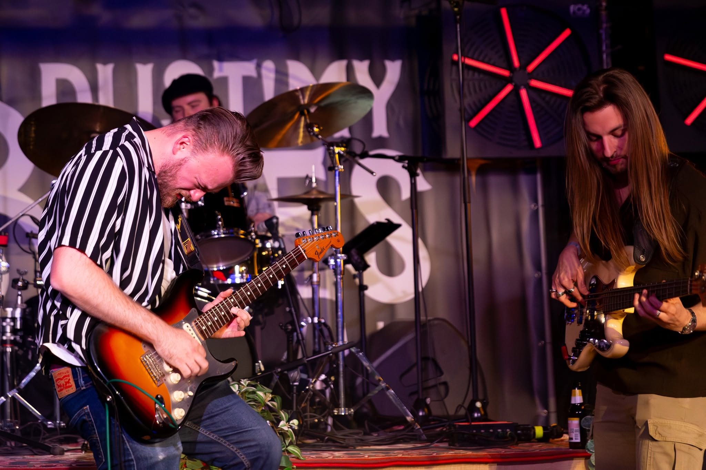

Rauwe, soulvolle blues uit België — opgebouwd in de smoky bars van Gent.
Kant A · 01 — Over de band
Het Lajos Tauber Trio wakkert het vuur van de grote bluesmeesters opnieuw aan. Van de slepende grooves van Muddy Waters tot het rauwe gitaarwerk van Stevie Ray Vaughan en Gary Clark Jr. wij spelen met lef en gevoel.
Naast de classics brengen we ook eigen werk. Of het nu een sfeervolle avond in een café is, een festivalpodium of een privéfeest: drie man, één groove, en een avond vol soul.

◷ 35mmKant A · 02 — De bezetting
Gitaar & zang
Gent
01Basgitaar & backings
Knokke
02Drums
Oostende
03Kant B — De setlist
Een greep uit onze setlist: een eerbetoon aan de blueslegendes, met eigen werk ertussen.
Kant B — Beluister
Bekijk ons live in actie.
Tournee — Live
Boekingen
Interesse om ons te boeken? Stuur een bericht, we komen graag langs.
info@lajostaubertrio.be